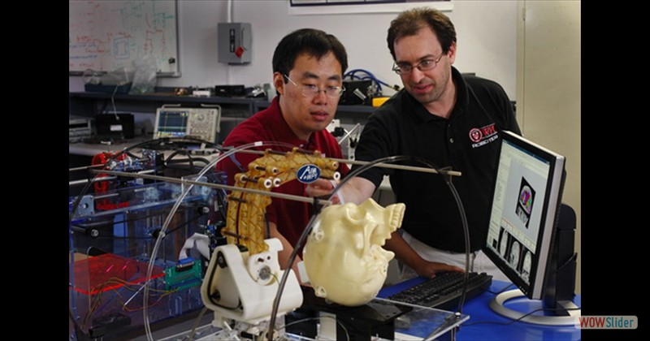
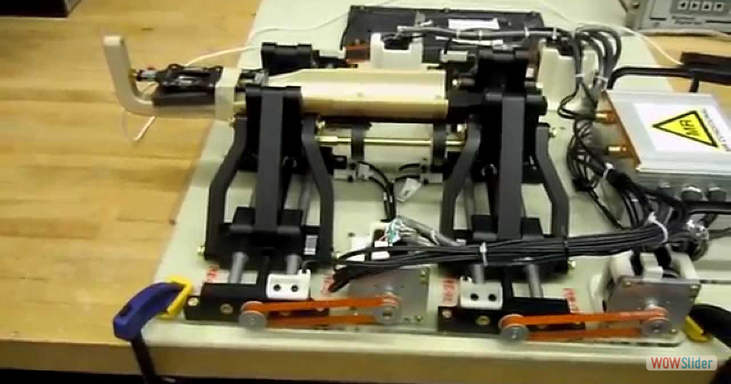
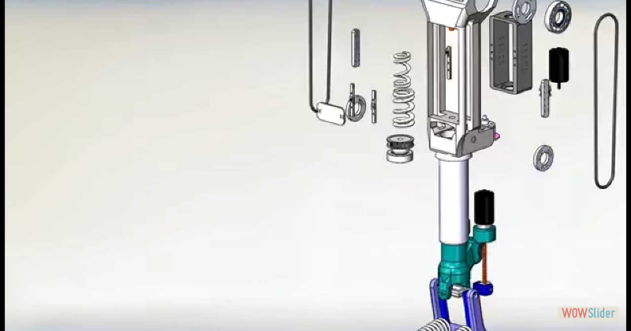
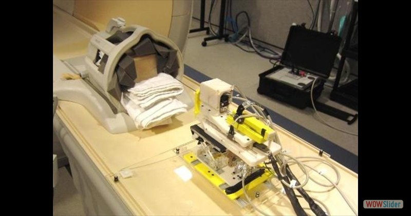
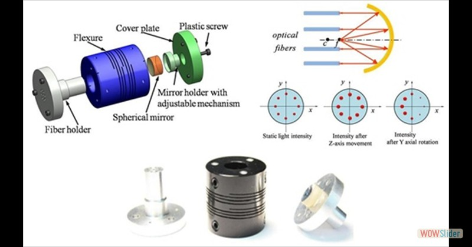
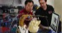
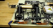
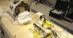
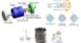

Team leader for NIH $3.8million grant support
First human trial 08/2014


WPI, Harvard, JHU collaboration, first human trial 08/2014
Fabry-Perot interferometer fiber optic sensor
1
2
3
4
5
image carousel
by WOWSlider.com v7.2